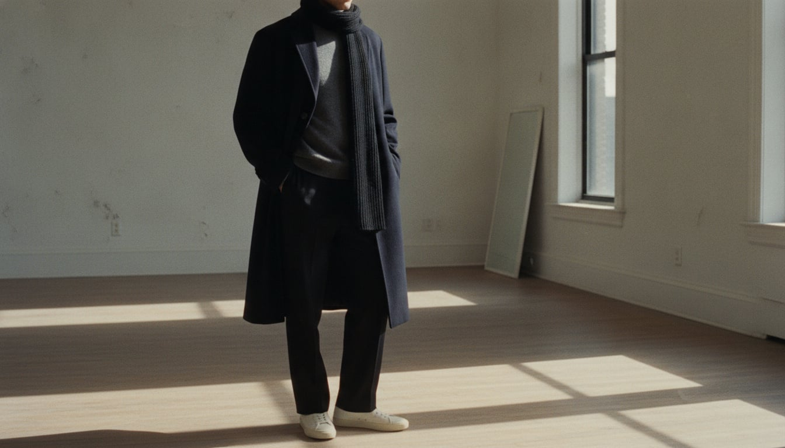

The Minimalist
Scandinavian minimalism in menswear owes less to any single designer than to a whole cultural habit of understatement — the Jantelov instinct, half-joking and half-serious, that you shouldn't think you're anything special, reflected straight back in a closet of navy, grey, black, and off-white. It found fashion form in the 1990s, when Helmut Lang and Jil Sander stripped tailoring down to line and proportion, and it found a retail home in the 2000s with brands like COS, which built a business on clothes with almost nothing to say for themselves — and said it very well.
The trademark isn't the absence of design so much as design in hiding: seams placed with real precision, proportions cut a size roomier or leaner than expected, fabric chosen for how it moves rather than how it prints. Nothing shouts, because everything's already been edited down to the version of itself that needed the least explaining.
It's a style for people who find real confidence, not deprivation, in restraint — who'd rather be underestimated at first glance and then noticed on close inspection, when someone realizes the grey sweater was cashmere all along. The minimalist doesn't dress to disappear; he dresses so that when you do look, you look properly.
- A near-monochrome palette — black, grey, navy, and off-white, rarely disturbed
- Clean, unbroken lines with almost no visible branding
- Proportion used as the main design tool: a boxier shoulder, a longer hem
- Technical-simple fabrics chosen for drape and hand-feel over pattern
- Quality concentrated in basics — the T-shirt, the coat, the trouser — rather than statement pieces
The Boxy Overcoat
Scandinavian and Japanese minimalists both arrived at the same silhouette from different directions in the 1990s and 2000s: a coat with almost no shape built in, so that proportion — not tailoring — does all the design work.
Gets the boxy proportion and a real wool blend right at the brand's own entry price.
Shop this →Heavier cloth and a more considered drop shoulder.
Shop this →The two houses most responsible for popularizing this exact silhouette at a luxury level.
Shop this →The Crewneck Sweater
The plain crewneck is the minimalist wardrobe's real centerpiece, precisely because it has nothing to hide behind — the whole argument rests on the yarn quality and the cut.
Genuine merino or cashmere at an unusually low price point for the fiber.
Shop this →The fit and hand-feel the rest of the tier is measured against.
Shop this →The Straight Trouser
As tailoring loosened its grip on the minimalist wardrobe, the straight (not skinny, not wide) trouser became the default — a leg line with no strong opinion, built to disappear into the outfit's overall proportion.
A clean straight leg at the brand's own accessible price.
Shop this →Heavier wool or cotton twill and a more exact rise.
Shop this →Japanese or French mill fabric with a drape the lower tiers can't quite match.
Shop this →The Minimal Sneaker
Common Projects effectively created this category in 2004 with the Achilles Low — a plain leather sneaker with visible gold-foil stamped numbering as its only branding, designed to look as much like a shoe as a sneaker.
Gets the silhouette right in a synthetic or lower-grade leather.
Shop this →Real leather and better construction, still widely accessible.
Shop this →The Wool Scarf
A single, wide, undyed or solid-colored wool scarf became the minimalist wardrobe's one allowed accessory, because texture — not pattern — was the only kind of interest the aesthetic permitted itself.
Hand-loomed or mill-direct wool with a texture no mass factory quite replicates.
Shop this →The palette stays exactly the same; the fabric gets lighter -- linen or a fine cotton instead of wool, still monochrome, still unbranded. Proportions loosen slightly rather than shrink.
Layering becomes the entire design exercise: a fine merino under the boxy overcoat, a scarf in the same neutral family, everything still edited down to one or two tones.
A single, excellent technical-minimalist raincoat -- Scandinavian brands do this well -- kept in black or stone, no logo, no exceptions to the palette.
The overcoat gets swapped for a longer, more technical down or wool-blend coat, still monochrome, with boots chosen for function but never visibly technical-looking.
Formality here means precision, not decoration -- the same silhouette in a finer fabric, pressed rather than embellished. A tie only if genuinely required, and then a plain one.
Copenhagen, Kyoto, and a week off-grid at a design-forward cabin with no cell service — the common thread is architecture that respects negative space. Packs one bag, always.
Marie Kondo taken more seriously than she's usually credited for, Kenya Hara's writing on emptiness and design, and Scandinavian crime fiction read for the atmosphere as much as the plot.
Nils Frahm, Olafur Arnalds, and ambient records meant to be background rather than foreground — music chosen the way everything else is, for what it doesn't do as much as what it does.
White walls, one exceptional chair rather than five good ones, no visible cords, and a level of tidiness that looks effortless because it's actually enforced daily.
Running, a considered coffee ritual performed the same way every morning, and a habit of getting rid of one thing every time something new comes in.